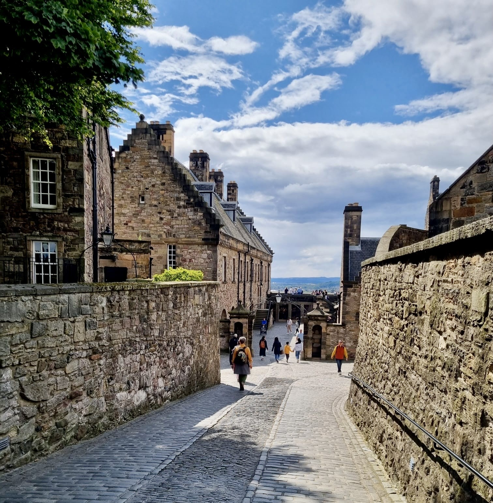
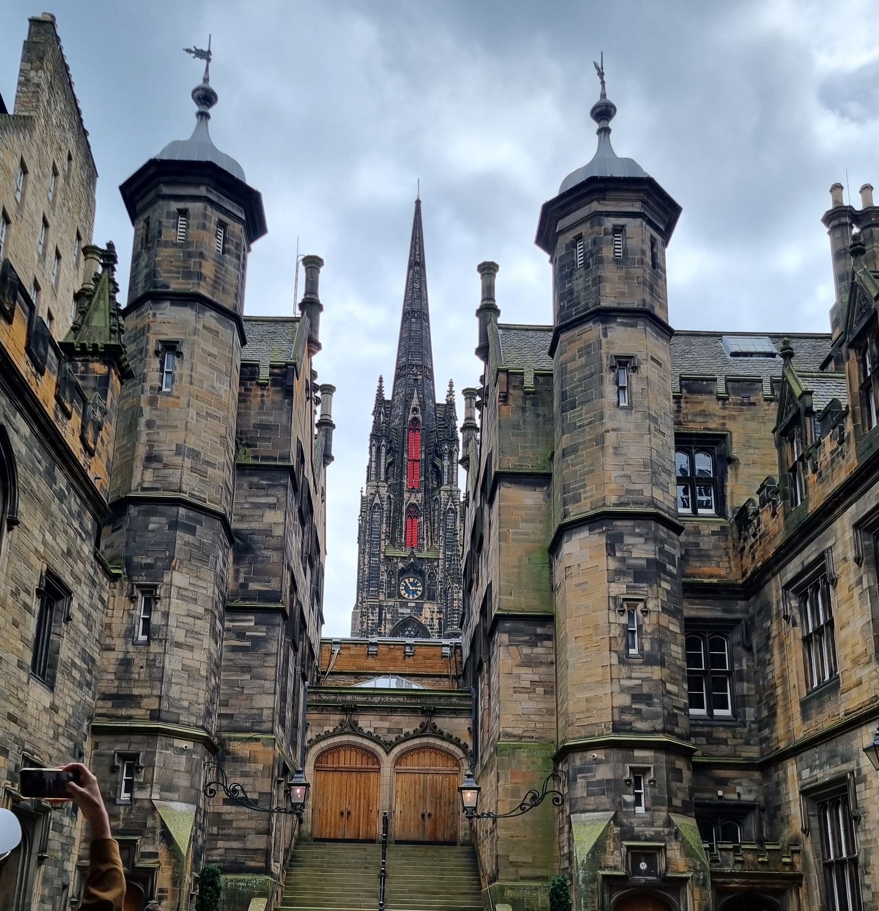
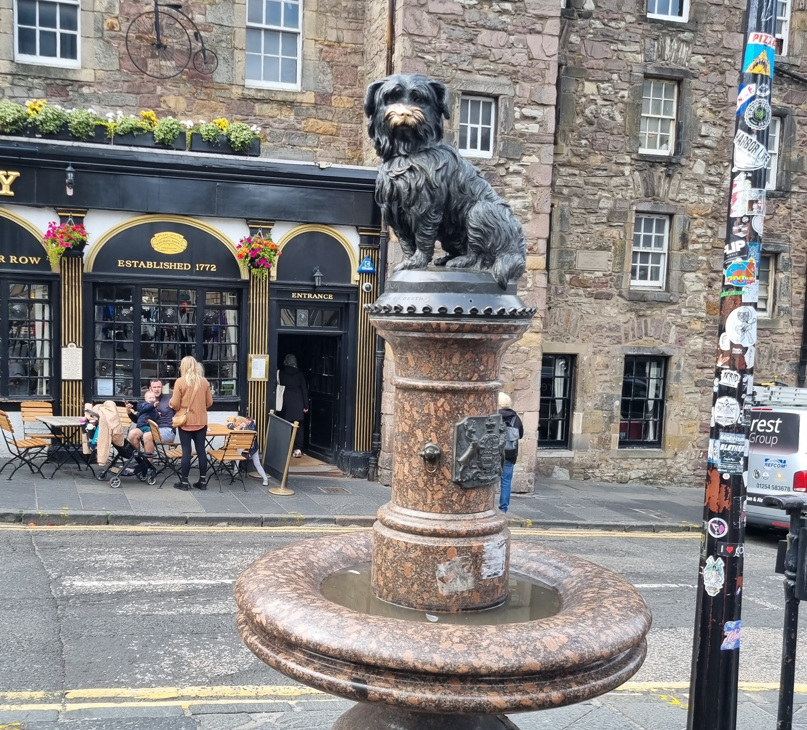
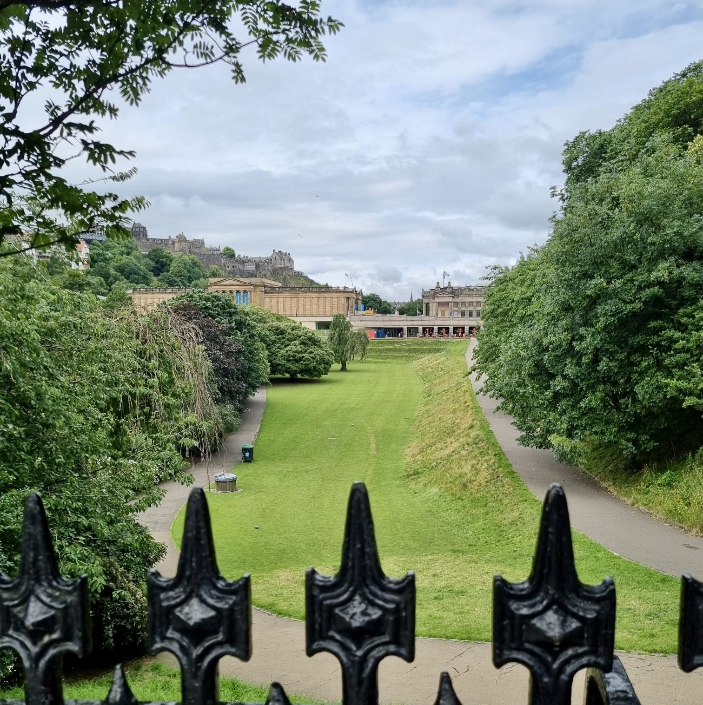

Why Edinburgh?
Edinburgh, where the magic of Harry Potter was born
Edinburgh, the jewel of Scotland's heritage and culture, is a city where history and modernity intertwine. The city’s rich history is visible in landmarks, from the ancient Edinburgh Castle perched atop Castle Rock to the cobbled streets of the Royal Mile.
Additionally, Edinburgh holds a special place in the hearts of Harry Potter fans, as J.K. Rowling wrote much of the series in local cafés, drawing inspiration from sites like George Heriot's School and Greyfriars Kirkyard.
This blend of past and present, reality and imagination, makes Edinburgh a truly enchanting destination.
Attractions
Top attractions in Edinburgh
Edinburgh Castle
Discover the history and majesty of Edinburgh Castle, perched on Castle Rock. Explore its ancient halls, the Crown Jewels, and the Stone of Destiny.
Adress:
Castlehill, Edinburgh EH1 2NG
Why Visit:
It offers a deep dive into Scotland’s rich history and provides stunning panoramic views of the city from its elevated position. Its historical exhibits and breathtaking architecture make it a must-see attraction.
The Royal Mile
Walk down the historic Royal Mile in Edinburgh's Old Town, connecting Edinburgh Castle to Holyrood Palace. Enjoy the charming shops, street performers, and historic sites along the way.
Adress:
The Royal Mile, Edinburgh EH1
Why Visit:
It is the heart of Edinburgh’s Old Town, filled with vibrant street life and centuries-old history. The lively atmosphere, combined with unique shops and historic landmarks, makes every visit a memorable experience.

Arthur's Seat
Hike up Arthur's Seat, an ancient volcano and the highest point in Holyrood Park. Enjoy breathtaking panoramic views of the city and beyond.
Adress:
Queen's Dr, Edinburgh EH8 8HG
Why Visit:
It offers a perfect escape into nature right in the middle of the city. The climb is rewarding, with spectacular views that make you feel on top of the world, offering a unique perspective of Edinburgh’s landscape.
Gallery
My photos from Edinburgh



